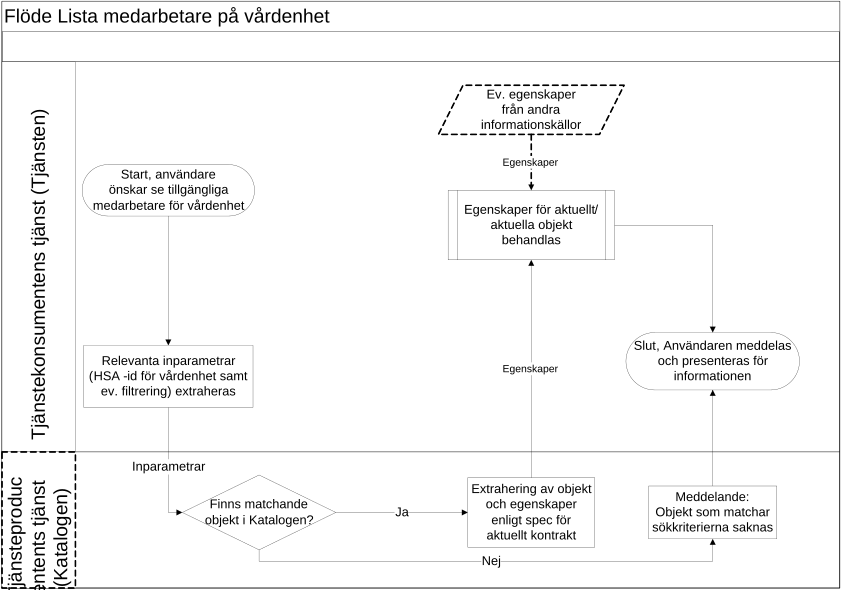

strategicresourcemanagement: persons: employee
2.0.0-rc1 - draft
strategicresourcemanagement: persons: employee - Local Development build (v2.0.0-rc1) built by the FHIR (HL7® FHIR® Standard) Build Tools. See the Directory of published versions
Källa: Tjänstekontraktsbeskrivning strategicresourcemanagement: persons: employee, tagg 2.0_RC1 (2016-11-22), TKB_strategicresourcemanagement_persons_employee.docx.
Utgången domän. Domänen kom aldrig längre än 2.0_RC1. I september 2017 flyttades tjänstekontrakten till infrastructure.directory.employee, som har en egen IG, och domänens repo är sedan dess tomt. IG:n dokumenterar RC-versionen.
Tjänstekontrakten som beskrivs i detta dokument används för att hämta information om en specifik person som är anställd inom eller arbetar på uppdrag av en organisation verksam inom svensk vård och omsorg.
Anropet kan till exempel användas vid uppdatering/kontroll av en intern användardatabas i en tjänst eller i ett sökgränssnitt för att presentera detaljerad information om en person. Dessa användningsområden kan beskrivas med nedanstående övergripande flöde.
Tjänstekontrakten som idag stödjer detta flöde är
GetEmployeeIncludingProtectedPerson (se avsnitt 6.1)
GetEmployee (se avsnitt 6.2)
Fler tjänstekontrakt kan komma att utvecklas varefter behov uppstår.
Flödet startar generellt när en användare i tjänstekonsumentens tjänst (nedan kallad Tjänsten) önskar åtkomst till viss information som finns i tjänsteproducentens tjänst (nedan kallad Katalogen)
Tjänsteproducenten kan här antingen hämta den efterfrågande informationsmängden i det ögonblick då användaren försöker få åtkomst till informationen eller i förväg genom regelbunden (ofta dygnsvis) inhämtning av den totala informationsmängd som överenskommits i anslutningen
Relevant inparameter extraheras och skickas i överenskommet tjänstekontrakt till Katalogen
Vilka inparametrar som är relevanta definieras i respektive kontrakt
Katalogen verifierar om aktuellt objekt återfinns i Katalogen, baserat på inskickade inparametrar
Om så inte är fallet skickas ett meddelande till Tjänsten att objektet saknas och flödet fortsätter då enligt punkt 6
Om objektet återfinns i Katalogen extraheras de egenskaper som specificerats i aktuellt tjänstekontrakt och skickas till Tjänsten
Egenskaper för det eller de objekt som returnerats från Katalogen behandlas i Tjänsten
Irrelevant information sållas bort, eventuell nödvändig översättning av attributinnehåll görs och informationen läggs in i Tjänstens layout/mallar för presentation av information
Vissa tjänster kan även använda information från andra källor som då också läggs ihop med informationen från Katalogen enligt ovan
Tjänsten meddelar användaren resultatet av sökningen och presenterar den information som erhållits från Katalogen samt eventuella andra informationskällor
| Namn/beteckning | Beskrivning alt. referens |
|---|---|
| Användare | Utgörs som regel av en medarbetare inom vården (som söker information om en specifik person) |
Tjänstekontrakten som beskrivs i detta flöde används för att hämta information om personer som arbetar på uppdrag av en specifik vårdenhet.
Anropet kan till exempel användas vid tillägg/uppdatering/kontroll av användare i en intern användardatabas i en tjänst eller vid tilldelning av ärenden till en medarbetare. Dessa användningsområden kan beskrivas med nedanstående övergripande flöde.
Tjänstekontrakten som idag stödjer detta flöde är
GetCommissionMembersIncludingProtectedPerson (se avsnitt 6.3)
GetCommissionMembers (se avsnitt 6.4)
Flödet startar generellt när en användare i tjänstekonsumentens tjänst (nedan kallad Tjänsten) önskar åtkomst till viss information som finns i tjänsteproducentens tjänst (nedan kallad Katalogen)
Tjänsteproducenten kan här antingen hämta den efterfrågande informationsmängden i det ögonblick då användaren försöker få åtkomst till informationen eller i förväg genom regelbunden (ofta dygnsvis) inhämtning av den totala informationsmängd som överenskommits i anslutningen
Relevanta inparametrar extraheras och skickas i överenskommet tjänstekontrakt till Katalogen
Vilka inparametrar som är relevanta definieras i respektive kontrakt
Katalogen verifierar om aktuellt objekt återfinns i Katalogen, baserat på inskickade inparametrar
Om så inte är fallet skickas ett meddelande till Tjänsten att objektet saknas och flödet fortsätter då enligt punkt 6
Om objektet återfinns i Katalogen extraheras de egenskaper som specificerats i aktuellt tjänstekontrakt och skickas till Tjänsten
Egenskaper för det eller de objekt som returnerats från Katalogen behandlas i Tjänsten
Irrelevant information sållas bort, eventuell nödvändig översättning av attributinnehåll görs och informationen läggs in i Tjänstens layout/mallar för presentation av information
Vissa tjänster kan även använda information från andra källor som då också läggs ihop med informationen från Katalogen enligt ovan
Tjänsten meddelar användaren resultatet av sökningen och presenterar den information som erhållits från Katalogen samt eventuella andra informationskällor
| Namn/beteckning | Beskrivning alt. referens |
|---|---|
| Användare | Utgörs som regel av en medarbetare inom vårdens administration (som söker en specifik person i en lista av medarbetare) |

| Tjänstekontrakt | Flöde |
|---|---|
| GetEmployeeIncludingProtectedPerson (se avsnitt 6.1) | Hämta information om anställd/uppdragstagare |
| GetEmployee (se avsnitt 6.2) | Hämta information om anställd/uppdragstagare |
| GetCommissionMembersIncludingProtectedPerson (se avsnitt 6.3) | Lista medarbetare på vårdenhet |
| GetCommissionMembers (se avsnitt 6.4) | Lista medarbetare på vårdenhet |
För närvarande är aggregering eller engagemangsindex ej aktuellt, då endast en tjänsteproducent är ansluten till tjänstedomänen.
I samband med att fler tjänsteproducenter ansluter till tjänstedomänen behöver sökningen från anropande tjänstekonsument realiseras mot flera tjänsteproducenter. Vilken alternativ lösning som ska tillämpas när denna situation uppstår är ännu inte beslutat, se AB-2.3 [R1].